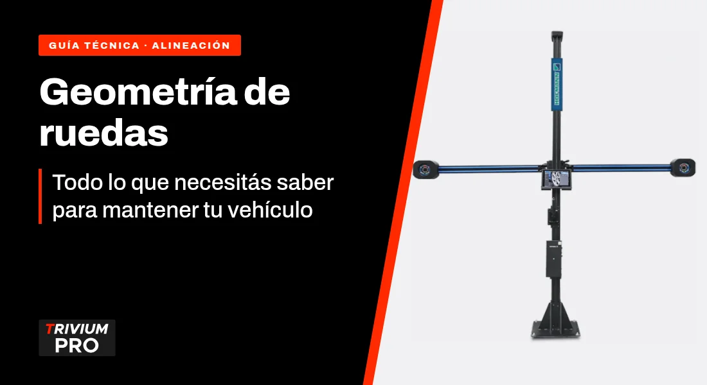

¿Qué es la Geometría de Ruedas?
La geometría de ruedas se refiere al conjunto de ángulos y posiciones que determinan cómo las ruedas de un vehículo se relacionan con el chasis y el suelo. Estos ángulos se ajustan en fábrica para optimizar el manejo, la estabilidad y la durabilidad de los neumáticos. Sin embargo, con el tiempo, baches, golpes o incluso el uso diario pueden desalinearlas, generando problemas que van desde un mayor consumo de combustible hasta riesgos de seguridad.
Tipos de Desalineación: Los Principales Ángulos a Conocer
Existen varios ángulos clave en la geometría de ruedas. Cada uno puede desalinearse de forma positiva o negativa, y su desajuste genera efectos específicos. Vamos a desglosarlos uno por uno:
1. Comba o Caída (Camber)
- Descripción: Es el ángulo que forma la rueda con la vertical, visto desde el frente del vehículo. Si la parte superior de la rueda se inclina hacia afuera, es comba positiva; hacia adentro, negativa.
- Tipos de desalineación:
- Positiva excesiva: Las ruedas se abren hacia afuera, común en vehículos sobrecargados.
- Negativa excesiva: Las ruedas se cierran hacia adentro, típico en autos deportivos para mejor agarre en curvas, pero problemático en uso diario.
- Efectos en el vehículo y neumáticos: Una comba desalineada causa desgaste irregular en los bordes de los neumáticos (externo o interno). El vehículo puede “tirar” hacia un lado, reduciendo la estabilidad en rectas y aumentando el riesgo de aquaplaning en lluvia. Además, afecta la adherencia en curvas.
2. Avance (Caster)
- Descripción: Es el ángulo del eje de dirección visto desde el lateral. Imaginate una línea imaginaria desde el pivote superior al inferior de la suspensión; si se inclina hacia atrás, es avance positivo (lo ideal para la mayoría de los autos).
- Tipos de desalineación:
- Positivo insuficiente o negativo: Común después de golpes en la suspensión.
- Excesivo: Puede hacer el volante más pesado.
- Efectos en el vehículo y neumáticos: Un avance desajustado hace que el vehículo sea inestable a altas velocidades, como en autopistas. Provoca vibraciones en el volante y desgaste prematuro en los neumáticos delanteros. En términos de manejo, reduce la capacidad de “autocorrección” del volante después de una curva.
3. Convergencia (Toe) o Paralelismo
- Descripción: Es el ángulo que forman las ruedas vistas desde arriba. Si apuntan hacia adentro (hacia el centro del vehículo), es convergencia positiva (toe-in); hacia afuera, negativa (toe-out).
- Tipos de desalineación:
- Toe-in excesivo: Las ruedas “miran” demasiado hacia adentro.
- Toe-out excesivo: Común en vehículos con tracción delantera desajustados.
- Efectos en el vehículo y neumáticos: Es uno de los más notorios: causa un desgaste en “sierra” o “pluma” en los neumáticos, aumentando el ruido y el consumo de combustible por mayor fricción. El auto puede derivar hacia un lado, afectando la precisión en el manejo, especialmente en ciudades con tráfico.
Otros Ángulos Importantes
- Ángulo de empuje (Thrust Angle): Es la diferencia entre el eje trasero y el delantero. Si está desalineado, el vehículo “cangreja” (se mueve de lado), desgastando neumáticos traseros.
- Ángulo de pivote (Kingpin Inclination o KPI): Afecta la estabilidad en curvas y el retorno del volante.
- Retroceso (Setback): Diferencia en la posición longitudinal de las ruedas delanteras, común después de accidentes.
Estos desajustes suelen combinarse, amplificando los problemas. Por ejemplo, una comba negativa con toe-out excesivo puede destruir neumáticos en meses.
Cómo Afectan Estos Desajustes al Vehículo y a los Neumáticos
Los efectos van más allá del desgaste visible:
- En los neumáticos: Desgaste irregular (bordes, centro o patrones asimétricos), reduciendo su vida útil en hasta un 50%.
- En el vehículo: Mayor consumo de combustible (hasta 10% más por fricción extra), vibraciones, ruido, inestabilidad en curvas o frenadas, y sobrecarga en la suspensión y dirección. En el peor caso, aumenta el riesgo de accidentes, especialmente en condiciones adversas como lluvia o niebla.
- Impacto general: Reduce la comodidad de manejo, acelera el envejecimiento de componentes y puede invalidar garantías si no se corrige a tiempo.
Cómo Solucionar con una Alineadora: Paso a Paso
La solución principal es una alineación profesional usando una alineadora (o máquina de alineación). Estas herramientas miden con precisión los ángulos y permiten ajustes milimétricos. Aquí va un guía simple:
- Diagnóstico: Llevá el vehículo a un taller equipado. La alineadora usa sensores láser o cámaras para medir comba, avance, convergencia y más, comparándolos con las especificaciones del fabricante.
- Ajustes:
- Para comba: Ajustar brazos de suspensión o placas excéntricas.
- Para avance: Modificar la posición de los amortiguadores o barras estabilizadoras.
- Para convergencia: Girar las bieletas de dirección.
- Si hay daños estructurales (como después de un choque), puede requerir reparaciones previas.
- Verificación: Después de ajustar, se realiza una prueba de manejo y una nueva medición para confirmar.
Ventajas de Tener una Alineadora en tu Taller
Si sos dueño de un taller mecánico, invertir en una alineadora (como modelos de Hofmann o John Bean) trae beneficios enormes:
- Eficiencia y precisión: Medidas digitales en minutos, reduciendo errores humanos y tiempos de trabajo.
- Aumento de ingresos: Ofrecé servicios de alineación, que son recurrentes (recomendado cada 10.000 km o después de cambiar neumáticos). En un mercado competitivo como el de Capital Federal, esto atrae clientes fieles.
- Versatilidad: Sirve para autos, camionetas y hasta camiones livianos, cubriendo la diversidad de vehículos en nuestras rutas.
- Ahorro a largo plazo: Evitá subcontratar servicios y mantené el control de calidad. Además, modelos modernos incluyen software con actualizaciones para vehículos híbridos o eléctricos, cada vez más comunes.
- Seguridad y reputación: Clientes satisfechos por un manejo impecable, lo que mejora reseñas en Google o redes sociales.
- Rentabilidad: Se amortiza rápido en zonas de alto tránsito como el Gran Buenos Aires.
En resumen, una alineadora no es un gasto, sino una inversión que posiciona tu taller como referente en mantenimiento automotor.
Conclusión: No Subestimes la Geometría de Ruedas
Mantener la geometría de ruedas en regla es clave para la seguridad, el ahorro y el placer de conducir. Si notás desgastes extraños en tus neumáticos o el auto “tira” al soltar el volante, no lo ignores: agenda una alineación ya. Y si estás en el rubro mecánico, considerá adquirir una alineadora para elevar tu negocio.